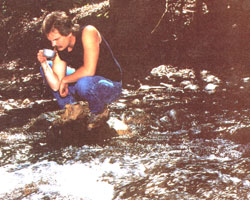
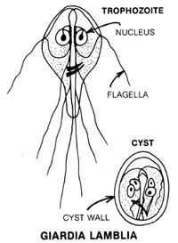

Water you drink in the pristine wilderness may not be as pure as you'd think, because there's ...
STAFF PHOTOS
I wandered up a rock canyon that veered off from a larger dry wash. The spot was so remote that I could find no trace of footprints on the soft, sandy bottom. The sides of the canyon grew steeper and narrower around each bend.
A spotted owl greeted me from his perch on a box elder tree. I thought he'd probably never seen anything like me so close, and I told him I felt the same about him. I watched the bird awhile, then went on my way. Before long, the canyon walls were only seven or eight feet apart and about 40 feet high, winding tight around corners.
Then I heard it: "gurgle, burble" . . . the sound any creature in the high desert would find heavenly. Abruptly the canyon ended in a tiny waterfall and a pool. I drank and drank. Ahhh . . .
During the six months that followed, I returned to this isolated canyon whenever I could. I discovered the origin of the spring, about 60 feet above the falls. The spot was my own paradise. I always drank my fill from the little waterfall. And I always left it feeling renewed and restored.
Then one day I took a friend into the canyon after the summer rains. He, too, was enchanted. But he wouldn't drink the water at the end. "No way," he said, wary of some parasite he'd heard was infecting our streams and rivers. I drank some water, though. After all, I knew the spring was safe.
About two weeks later, I began to experience intense abdominal pain. Then came weeks of constipation. After that I was hit with diarrhea and vomiting. Nothing-not even water-would stay in my gastrointestinal tract for more than 20 minutes.
I was starving, dehydrated, and weak by the time I finally consulted an internist. After a thorough examination, he made his diagnosis: giardiasis. I was given a drug, and within 24 hours the nausea, vomiting, and diarrhea subsided. In two days I felt brought back to life. However, I was still skinny and tired from a month's infirmity . . . and I was finally wise to a sad fact: "Nor any drop to drink" holds true even in paradise.
What had made me so sick was an intestinal parasite called Giardia (je-ar'-de-a) lamblia. Giardiasis, the disease the little giardias cause, is sometimes called backpacker's fever (because backwoods hikers catch it from drinking untreated water) . . . or beaver fever (because these large rodents often carry and spread the disease as they travel between aquatic environments). But giardiasis is not limited to remote waters. It's now the most common parasitic disease of humans in the U.S., and it's fast becoming a national concern. It is, in fact, worldwide-present in all climates from the equator to the poles . . . and a major cause of traveler's diarrhea. (So many tourists have returned from the Soviet Union-to cite one example-with giardiasis that another name for the disease is the trotskys.)
So what do you do about it? How can you keep from getting giardiasis . . . or get rid of a case you do contract? To answer these questions, you first need to understand what both the organism and the ailment are.
Giardia lamblia is a microscopic, one-celled protozoan that can exist in two different forms: one a dormant, tough-walled cyst and the other a mobile, vegetative trophozoite that can swim around with four pairs of flagella and adhere to your intestinal lining with a sucking disk. The trophozoite is very distinctive (see illustration). Its two nuclei and organelles make it look like a happy face . . . a tiny happy face: It's only 10 to 12 microns long by 7 to 10 microns wide. About 8,000 trophozoites can fit on the head of a pin.
The ovoid cyst is less jovial-looking, but it has a sterner function: This form helps the parasite survive hard times. The cyst can live for four days in 98.6°F (body temperature) water and more than two months at 39°F (for example, in the bottom of a winter pond). And taken into a host with food or drink, the hardwalled, dormant invader can survive the acid digestive juices of its host's stomach.
Once the cyst gets to the safety of the intestines, its tough wall breaks down and it "hatches" into a trophozoite, which attaches itself to the intestinal mucosa. There the little giardia feeds and multiplies (by simple fission), producing enormous numbers of progeny, which are passed as cysts in the feces, enhancing the organism's chances of getting to another host. (One estimate places the number at 14 billion protozoa per defecation!)
The most surprising thing about giardiasis is the variation in host response to infection, which covers the spectrum from no symptoms at all to serious disease. Many people who carry giardiasis appear to be completely asymptomatic. That probably explains why the pathogenic nature of the organism has been recognized only in the last 40 years, even though the giardia itself has been known for 300 years-since the inventor of the nicroscope, Anton van Leeuwenhoek, spied the smiling trophozoite in 1681. ( Giardia lamblia was previously thought to be a harmless com mensal resident of the gut . . . merely "eating at the same table" as its host.)
Those who do become ill don't experience symptoms until the trophozoites have multiplied enough to have effects; this incubation period is usually around 6 to 20 days. The malady then experienced varies from mild-but often reoccurring-diarrhea to severely debilitating malabsorption and weight loss. The results can include painful illness and weakness (I could hardly drag myself out of bed), dehydration, lactase and vitamin deficiencies, and electrolyte imbalance. The Pandora's box of complaints goes on: abdominal pain, cramps, nausea, flatulence, belching, anorexia, fever, diarrhea alternating with constipation, and stools that often contain unusual amounts of mucus.
Giardiasis is not considered to be a killing disease (although it may make you wish you were dead) . . . and some people experience selflimiting infections that disappear after one to several weeks. Then again, many afflicted individuals struggle through prolonged illnesses that continue for months or even years with symptoms waxing and waning. (For example, if you have an unexplained periodic recurrence of diarrhea, you could be the victim of a persistent case of giardiasis.) Even if you've been cleansed of the parasite, you can recontract the disease over and over.
The giardia spreads by waterborne infection and by direct person-to-person (and animal-to-human) contact.
The most common source of infection is drinking water that contains cysts. (Swimming in infected water will also expose you to the parasite.) The organism enters the watershed with the feces from an infected human or animal or by sewage contamination. The cyst is apparently not host-specific and has been found in beavers, muskrats, cattle, sheep, deer, moose, rats, mice, cats, dogs, rabbits, gerbils, and guinea pigs. (Beavers earned their top billing because they were the first identified animal carriers and because their sometimes migratory, aquatic lifestyle made them the Johnny Appleseeds of this disease.) Any infected animal becomes a parasite factory, releasing millions of the cysts into the environment.
It's easy, then, to see why pure tap water can no longer be taken for granted. Indeed, outbreaks of the disease caused by organisms in the municipal water supply have occurred in Rome, New York . . . Banff, Alberta, Canada . . . Camas, Washington . . . Scranton, Pennsylvania ... Leningrad, Russia ... Reno, Nevada . . . and at least half a dozen cities in Colorado.
Such outbreaks are difficult to combat. The cyst is not necessarily killed by the concentrations of chlorine used in municipal water supplies. While proper filtration at the treatment plant is effective, the equipment must be carefully installed, operated, and maintained. (Since present identification procedures are intricate and fallible, it's not always possible to confirm when a water supply has been infected!)
Colorado's solution to the problem has been to require filtration-as well as disinfection-of all public water supplies that rely on surface water. And don't feel smug if you have your own private well. Although the giardia is much less common in underground water supplies, it has been found in wells, cisterns, and-as I learned the hard way-springs.
The persistent protozoan is also transmitted directly by what is known in medical circles as the fecal-oral route . . . being passed from person to person or from pet to person and by food handlers. (Giardiasis can also be transmitted sexually.)
Outbreaks have occurred in orphanages and institutions for the mentally retarded. Recently, a lot of epidemics have been traced to daycare centers, where the infection has been passed from one (often asymptomatic) child to another and then brought home to the diaper-changing parents. Pets, too, play an important role as reservoir hosts, making every gutter and drainage ditch a potential source of infection.
Of course, the best way to break the fecaloral cycle of infection is to practice good personal hygiene habits. Make sure all the members of your family wash their hands carefully with soap after toileting and handling diapers or other fecally soiled materials. And don't overlook pets or even yourself (you could be asymptomatic) as carriers.
Giardiasis is treated with one of three drugs (prescribed by a doctor after diagnosis):
Quinacrine hydrochloride (brand name Atabrine): This quinine-based drug is now considered the most effective treatment.
Metronidazole (brand name Flagyl): The FDA regards this as an "investigational" drug for giardiasis.
Furazolidone (brand name Furoxone): As the only anti-giardiasis drug available in suspension, this one is useful for infants.
One course of treatment usually eradicates the organisms, although resolution may be slow. In my case, the doctor prescribed quinacrine hydrochloride, but warned me it would have nasty side effects. "What side effects?" I asked. "Nausea." But I already had that!
My cure was immediate. For me, the quinacrine was a real miracle drug . . . and was I thankful for it.
How can people camping in the wilderness, traveling abroad, or even just living at home make sure the water they're drinking is safe?
Treatment with chemicals is not reliable. There are too many resistant organisms and critical variables (such as temperature, dosage, exposure time, and percentage of organic matter in the water). Consequently, neither chlorine nor iodine-two of the most common backcountry water purifiers-is 100% effective against giardia cysts. In addition, iodine is itself tricky to use and, indeed, potentially toxic. Accidentally swallowing a crystal or inhaling its gaseous fumes in a closed tent could cause serious illness. Chlorine, too, has drawbacks other than its partial effectiveness. It can form dangerous byproducts . . . and it definitely makes water taste bad.
Boiling will kill giardia cysts. A rolling boil will knock out giardias, other protozoa, and bacteria (not viruses, however). But boiling is inconvenient, time-consuming, and fuelwasting. (When I backpack, I don't bother much with fires or stoves anymore. I take dried foods-simple fare that will allow me to stay out for weeks at a time.)
For me the answer is the Katadyn pocket filter. It weighs 23 ounces, is about the size of a flashlight, and pumps water through a special ceramic filter whose maximum pore size is .2 microns. All particles and pathogens larger than this (including all protozoa and bacteria and some viruses) are physically prevented from passing through the filter. It's elegant, quick (it takes about three minutes of pumping to purify a quart of water), easy to use, and doesn't affect the taste. If the Katzdyn gets clogged with fine silt, the filter is easily cleaned with the stiff brush provided. This procedure can be repeated hundreds of times.
As with most quality products, the Katadyn is expensive . . . around $170. [EDITOR'S NOTE: The best price we have found is $150 postpaid from Provisions Unlimited, P.O. Box 456, Oakland, ME 04963.] But in my opinion, it's worth it. The company is Swiss and has been making the filters for 50 years. Organizations like NATO (North Atlantic Treaty Organization) and the International Red Cross have used them as standard equipment for decades. (Katadyn also makes larger filters for home use.)
There are other filters on the market, but I feel they're second choices. Most have larger pore sizes of.4 microns (which will stop giardias but not all infective bacteria), throw-away cartridges, and clogging problems. [EDITOR'S NOTE: One of the best of these other filters is First-Need. This 12-ounce unit is available for $39.95 postpaid (a recommended replacement canister is an additional $24.95) from General Ecology, Inc., 151 Sheree Blvd., Lionville, PA 19353.]
We're really quite lucky. Compared with the crippling, blinding, and terminal diseases of the tropics that affect millions of people each year, giardiasis seems quite benign. And we have effective treatment for it, whereas some tropical diseases are resistant to all known drugs.
Then again, giardiasis is not the only waterborne infectious disease in the U.S. There are hosts of bacteria, viruses, and other parasites. Still, Giardia lamblia is our most prevalent parasite . . . and one we're stuck with. We'll never be able to eradicate it from every stream and carrier (especially since most of the latter are asymptomatic).
This protozoan is here to stay-a fact of life, like pesty insects. Indeed, it's probably been around a heck of a lot longer than humans (the word protozoa actually means "first animal"). We just have to learn to live with Giardia lamblia.
By trying to live without it.
|
 |
 |
|